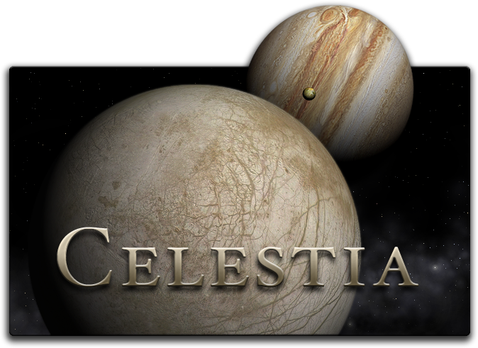
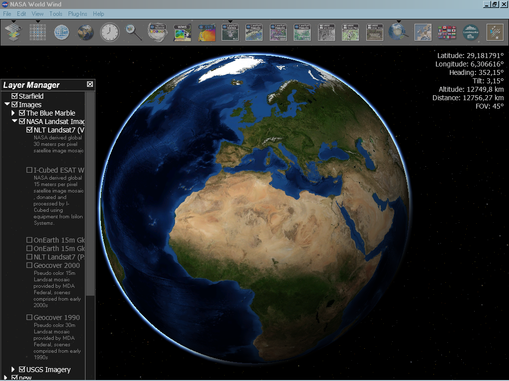
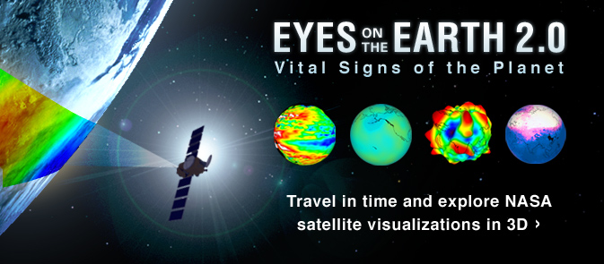

In this page we're going to show some interesting tools for discovering space exploration. For our project we didn't use directly these things but we think they can be fun and very useful for a deep analysis of space. Below you can find amazing stuff from websites to software that you can install on you computer.
CELESTIA: The Space Simulation Software

Celestia is a free real-time space simulation that lets you visually experience
our universe in three dimensions. Celestia was the initial inspiration and
creation of Mr. Chris Laurel, a Seattle, WA computer programmer who in 2001,
decided to write a free software program to be made available to everyone on
the world-wide-web that would place you in control of a virtual reality world
of the Solar System.
NASA World Wind

NASA World Wind is a free, open source API for a virtual globe. World Wind allows developers to quickly and easily create interactive visualizations of 3D globe, map and geographical information. Organizations across the world use World Wind to monitor weather patterns, visualize cities and terrain, track the movement of planes, vehicles and ships, analyze geospatial data, and educate people about the Earth. World Wind's source code, official releases, engineering roadmap, issue tracking and more are hosted by GitHub and managed by the NASA World Wind development team.
NASA Eyes on Earth

With NASA Eyes on Earth you can monitor our planet's vital signs, such as sea level height, atmospheric carbon dioxide concentration and Antarctic ozone. Trace the movement of water around the globe using the gravity map from NASA's GRACE satellites. Spot volcanic eruptions and forest fires using the carbon monoxide vital sign. Check out the hottest and coldest locations on Earth with the global surface temperature map. “Eyes on the Earth” displays the location of all of NASA's operating Earth-observing missions in real time and lets you compare them in size to a scientist or a school bus. Get a sneak peek at upcoming missions and learn how NASA is planning to study our Earth in the future.
As you can find NASA Eyes on Earth you'll come across with NASA Eyes on the Solar System and NASA Eyes on Exoplanets. They're both amazing software.
ESA Sentinel Toolboxes
ESA Sentinel Toolboxes are free open source toolboxes developed by ESA for the scientific exploitation of Earth Observation missions under the the Scientific Exploitation of Operational Missions (SEOM) programme element. STEP is the ESA community platform for accessing the software and its documentation, communicating with the developers, dialoguing within the science community, promoting results and achievements as well as providing tutorials and material for training scientists using the Toolboxes. The ESA toolboxes support the scientific exploitation for the ERS-ENVISAT missions, the Sentinels 1/2/3 missions and a range of National and Third Party missions. The three toolboxes are called respectively Sentinel 1, 2 and 3 Toolboxes and share a common architecture called SNAP. They contain some functionalities of historical toolboxes such as BEAM, NEST and Orfeo Toolbox that were developed over the last years.